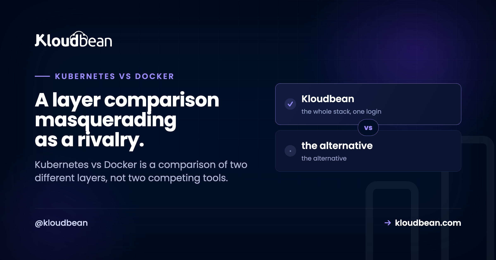

Kubernetes vs Docker: They Do Different Jobs, and You Probably Need Neither

Kubernetes vs Docker gets searched thousands of times a month, and the comparison does not really exist. Docker builds container images and runs containers on a machine. Kubernetes takes containers somebody already built and decides which of your machines should run them, restarting them when they die. You can use Docker with no Kubernetes anywhere near it. You cannot usefully run Kubernetes without container images, which something Docker-shaped built. So the honest answer to "which should I pick" is that they sit at different layers, and the question hiding underneath is a much better one: do you need orchestration at all?
They are not alternatives. Docker packages your application into a container image and runs containers on a single machine. Kubernetes is an orchestrator: it schedules containers across a fleet of machines, restarts failed ones, and handles rolling updates and service discovery. Kubernetes runs container images, so in practice you use both or you use neither. The decision worth making is whether your application needs orchestration across many machines, and for a single app with a database the answer is usually no.
Two layers, drawn
The clearest way to see this is to notice that the two tools care about different quantities of machines.
| Docker | Kubernetes | |
|---|---|---|
| What it is | Container build and runtime tooling | Container orchestrator |
| Builds images | Yes | No, it consumes them |
| Machines it manages | One | Many |
| Restarts a dead container | On the same host | Anywhere in the cluster |
| Survives a host failure | No | Yes, reschedules |
| Rolling updates with health gates | Not really | Built in |
| Learning curve | A weekend | Months, honestly |
| Ongoing operational burden | Small | Substantial and permanent |
"Kubernetes deprecated Docker" and why nothing broke
This deserves clearing up early because it caused real panic and still confuses people reading older posts.
Kubernetes used to talk to Docker Engine through an adapter called dockershim. Kubernetes maintained that adapter, it was awkward, and it was removed in Kubernetes 1.24. Clusters now use a container runtime that speaks Kubernetes' runtime interface directly, in practice containerd or CRI-O. Amusingly, containerd is the component Docker itself uses underneath.
The headline people took away was "Kubernetes deprecated Docker", which sounds like their images stopped working. They did not. Container images follow the OCI specification, so an image built with docker build is a standard artefact that containerd and CRI-O run without modification.
What actually changed affects cluster operators, not application developers: node-level tooling that talked to Docker on the host had to change, so docker ps on a node no longer shows you Kubernetes containers and you use crictl instead. If you build images and deploy them, this was a non-event. Build with Docker and run on Kubernetes remains the standard workflow.
The question you actually meant
Nobody genuinely wants to know whether an image builder is better than a scheduler. What people mean when they type this is one of these, and each has a different answer.
- "Should I containerise my app?" Almost always yes, and this has nothing to do with Kubernetes. A container fixes the works-on-my-machine problem by shipping the runtime with the code.
- "Is Docker Compose enough, or do I need Kubernetes?" The real question. Answered below.
- "Do I need Kubernetes to scale?" No. Kubernetes is one way to scale. A bigger server, several servers behind a load balancer, or a managed platform are others, and all of them are less work.
- "Should I learn Kubernetes for my career?" Different question, and the answer is more often yes than the engineering answer for your particular app.
That last distinction is worth sitting with. Plenty of Kubernetes adoption is a good career decision and a poor architecture decision at the same time, and those get conflated in planning meetings.
Three tiers, and most teams belong in the first two
Think of it as three rungs rather than two options.
Docker alone. One image, one container, one machine. Good for a single service, and excellent for making local development match production.
Docker Compose. Several containers described in one file, running on one machine, on a shared network so they can reach each other by name. This covers a startlingly large share of real production workloads: a web app, a database, Redis, a background worker. It is simple, you can read the whole configuration in one screen, and any engineer on your team can understand it in ten minutes.
services:
app:
build: .
ports: ["3000:3000"]
environment:
DATABASE_URL: postgres://app:secret@db:5432/app
depends_on: [db]
db:
image: postgres:16
volumes: ["pgdata:/var/lib/postgresql/data"]
volumes:
pgdata:The honest limitation: it is one machine. If that machine goes down, everything on it goes down, and Compose has no answer for that.
Kubernetes. Many containers across many machines, with a control plane keeping actual state matching declared state. You describe what you want running and it works out where, then keeps it that way when things fail.
What Kubernetes genuinely gives you
Fair is fair. When Kubernetes is the right answer it is a very good answer, and these are real capabilities that are painful to build yourself.
Rescheduling across machines. A node dies at 3am and its workloads come back on other nodes without anyone waking up. This is the headline feature and it is genuinely valuable.
Declarative desired state. You state "five replicas of this image" and the system reconciles continuously. Your infrastructure becomes reviewable in version control, which changes how teams work.
Rolling updates gated on health. New pods must pass their readiness probe before old ones are removed, and a failing rollout stops rather than taking the service down. Doing that properly requires real health checks, and shallow ones defeat the mechanism entirely, which is covered in our health checks guide.
Bin packing. With many differently-sized workloads, the scheduler fits them onto nodes more efficiently than you would by hand. At real scale this saves meaningful money.
A common substrate for many teams. Twelve teams shipping to one platform with one deployment model and namespace isolation beats twelve teams each inventing deployment.
Notice what those have in common. Every one of them pays off in proportion to how many machines and how many teams you have. With three servers and one team, you are paying full price for a fraction of the benefit.
The operational tax nobody puts in the estimate
Kubernetes is not a tool you adopt, it is a platform you operate. That is the part missing from most comparisons, so here is the bill.
The control plane needs running, or you pay a managed service for it. Cluster networking is a component you choose and understand, because when pod-to-pod traffic fails you cannot debug it without knowing how your CNI works. Getting outside traffic in means an ingress controller, which is another component with its own configuration language. Persistent storage means storage classes and volume claims, and stateful workloads are where teams get hurt most. Access control means RBAC, which is powerful and fiddly. Secrets need proper handling, since the default is base64 encoded rather than encrypted, and plenty of teams have shipped that misunderstanding. Then upgrades, on a cadence, with API deprecations that break your manifests. And observability, because kubectl get pods is not monitoring.
None of that is criticism. It is the honest cost of a system that does what Kubernetes does, and every item exists for a reason. But it adds up to somebody's job, or a meaningful slice of several people's jobs, forever.
My position, and I will state it plainly: most small and mid-sized applications do not need Kubernetes, and adopting it early is one of the most common ways teams slow themselves down while feeling productive. You trade application complexity you understand for platform complexity you do not. The tell is a team of four running a cluster to serve one Rails app and a Postgres database, spending Fridays on the cluster rather than the product.
Where the line actually falls
| Your situation | Reach for |
|---|---|
| One app, one database, moderate traffic | Managed server, or Compose on a VM |
| A few services, one team, one machine is enough | Docker Compose |
| Need to survive a single machine failing | Two or more servers behind a load balancer |
| Traffic outgrew one machine | Horizontal scaling with a load balancer |
| Dozens of services, several teams shipping independently | Kubernetes |
| Genuine variable load needing automated scaling across nodes | Kubernetes |
| Strict availability targets with automated failover | Kubernetes, or a managed HA setup |
| Multi-region with independent regional capacity | Kubernetes, or per-region deployments |
Note how many rows are solved by a load balancer rather than an orchestrator. High availability and horizontal scaling are the two goals most often used to justify Kubernetes, and both are achievable with a load balancer in front of a few servers, which most teams could stand up this afternoon. Our guides on vertical versus horizontal scaling and how load balancers work cover that path, and autoscaling explained is worth reading before you assume you need automatic scaling at all.
The middle option teams skip past
The debate usually gets framed as Compose or Kubernetes, and it quietly ignores the option that fits most teams: let somebody else run the platform layer, and keep your own architecture boring.
Concretely, most applications need a server that stays patched, a database that gets backed up, TLS that renews itself, a deploy that runs on git push, and the ability to add a second server behind a load balancer when traffic justifies it. That list contains no orchestration. It also covers the actual requirements behind most Kubernetes plans I have seen.
On Kloudbean that shape is the default rather than a workaround. Managed servers on seven clouds, so you pick the provider and region. Managed MySQL, MariaDB, PostgreSQL, Redis, Elasticsearch, and MongoDB as standalone one-click databases with backups. A Flexible Load Balancer available on any account to enable when you need to put traffic across several application servers. Automatic backups, free SSL, a firewall and intrusion prevention configured by default, and a Git integration that builds and deploys on every push with live build logs. All of it in one dashboard.
And where Kubernetes really is the right answer, it exists here as an enterprise engagement alongside autoscaling and custom architectures, which is the honest framing: a cluster is something we design and operate with you, not a switch on a self-serve plan. Saying otherwise would be exactly the overselling this article is arguing against.

If you do adopt Kubernetes, adopt it in this order
Because the failure mode is not choosing Kubernetes, it is choosing it before the prerequisites are in place.
- Containerise properly first. Configuration through environment variables, no state on local disk, clean startup and shutdown. See environment variables done right and graceful shutdown. An app that cannot be killed and restarted safely will not behave in a cluster.
- Use managed control planes. Running your own is a project with no payoff for almost everyone.
- Keep databases out at the start. Stateful workloads in Kubernetes are where teams lose weekends. A managed database attached to your cluster is the boring, correct first move.
- Write real health checks before you write manifests. Rolling updates are only as safe as the probe that gates them, and a probe returning 200 unconditionally is worse than none.
- Budget the ongoing cost openly. Name who owns upgrades and who is on call for the cluster, before the migration rather than after.
Related reading
If you have decided you do want containers, Docker container hosting covers running them without an orchestrator, and container security scanning covers what your images are actually shipping. On the scaling questions underneath this one: vertical versus horizontal scaling, load balancers explained, and autoscaling explained. On shipping safely without an orchestrator: zero downtime deployments and health checks. For the deployment path itself, how to deploy any app. And if self-hosting heavy infrastructure is your general direction, self-hosting GitLab is a good calibration of what running platform software really costs.
Skip the cluster. Ship the app.
Managed servers across seven clouds, one-click managed databases with backups, a load balancer when you need one, free SSL, and Git deploys with live build logs, from $8/mo. Free migration assistance included. Start at kloudbean.com.
7 clouds · 6 managed databases · Built-in load balancer · Automatic backups · Flat from $8/mo
FAQ
Is Kubernetes better than Docker?
The comparison does not hold, because they solve different problems. Docker builds container images and runs containers on one machine. Kubernetes schedules containers that already exist across many machines and keeps them running. Kubernetes needs container images to do anything, so the normal setup uses both rather than choosing between them.
Can I use Kubernetes without Docker?
Yes, and most clusters now do. Since Kubernetes 1.24 removed dockershim, clusters use containerd or CRI-O as the runtime instead of Docker Engine. You can also build images with other tools such as Buildah or Kaniko. But images built by docker build follow the OCI standard and run on those runtimes without any change, so building with Docker and running on Kubernetes is still completely normal.
Did Kubernetes deprecate Docker?
It deprecated and removed dockershim, the adapter Kubernetes used to talk to Docker Engine on each node. Your Docker-built images were never affected because they are standard OCI images. The change mattered to cluster operators whose node tooling talked to Docker directly, who now use crictl rather than docker ps. For application developers it was a non-event.
Do I need Kubernetes for a small app?
Almost certainly not. A single application with a database is well served by a managed server or Docker Compose on a VM, and if you need to survive one machine failing, two servers behind a load balancer gets you there with a fraction of the complexity. Kubernetes pays off in proportion to how many services, machines, and teams you have, so with one of each you carry the full cost for a sliver of the benefit.
Is Docker Compose enough for production?
For a lot of workloads, yes, with one significant caveat: Compose runs on a single machine, so that machine is a single point of failure. If an hour of downtime during a reboot or a host problem is acceptable, Compose is simple, readable, and perfectly serviceable. If it is not acceptable, you need more than one machine, and that is the point where orchestration or a load balancer enters the conversation.
What is the difference between Docker Swarm and Kubernetes?
Both orchestrate containers across machines. Swarm is much simpler to learn and operate and integrates directly with Docker's own tooling, while Kubernetes is far more capable and has effectively won the ecosystem, which is why the tooling, documentation, and hiring pool around it are incomparably larger. Swarm is a reasonable fit for a small cluster where simplicity matters more than ecosystem, though you will find fewer people to help.
Is Kubernetes hard to learn?
The concepts take a week. Operating a cluster competently takes months, and that gap is where teams get caught. You end up needing to understand cluster networking, ingress, storage classes, RBAC, secret handling, upgrade cycles with API deprecations, and observability. Managed control planes remove a real chunk of that burden and none of the conceptual load.
Does Kubernetes make my app scale automatically?
Only if you configure it to, and only within the capacity you have. Kubernetes can add pod replicas based on metrics, and adding machines to the cluster is a separate mechanism that has to be set up too. It also cannot scale a bottleneck that is not in your application: if the constraint is a single database, more replicas will make things worse rather than better. Find the bottleneck before you add automation.
Can I run Kubernetes on Kloudbean?
Kubernetes is available through enterprise engagements, together with autoscaling and custom architectures, so it is something designed and operated with you rather than a self-serve toggle. For the large majority of applications the platform's normal shape is a better fit anyway: managed servers across seven clouds, one-click managed databases, a load balancer you can enable when traffic justifies it, and Git-based deploys.